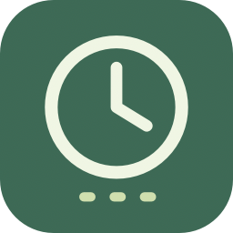

FEED WINDOW
スクロールに、
小さな区切りを。
Xのおすすめとリールの連続閲覧を、
それぞれ1回5分・1日3回だけ。時間と回数は変更できます。
DM・保存・個別動画は、回数を使わず見られます。
Safariで拡張機能を有効にしてください。
拡張機能は有効です。X・Instagramへのアクセスも許可してください。
拡張機能はオフです。Safariの設定で有効にしてください。
Apple Development証明書で署名した開発版です。
Safari → 設定 → 拡張機能 → Feed Windowをオンにし、
X・Instagramへのアクセスを許可してください。
「署名されていない拡張機能を許可」は不要です。